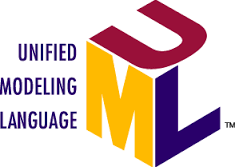
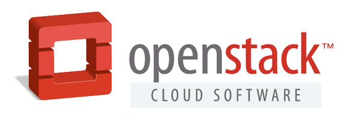

C
U
R
R
I
C
U
L
U
M
V
I
T
A
E
|
|
FORMATION |
2eme année de Master STIC pour la santé spécialité TECSAN.
1ere année de Master STIC pour la santé spécialité TECSAN. Voici le lien menant à la formation TECSAN.
Master de Biologie Intégrative et Physiologie (BIP) spécialité Neurosciences (UPMC).
Licence de biochimie-biologie spécialité Santé (BBS) - mention assez-bien (UAG Guadeloupe)
Baccalauréat série S (option physique-chimie).
EXPERIENCE PROFESSIONNELLE |
| Mars 2016 - Août 2016 : | stage sur l’utilisation d’une orthèse pneumatique contrôlé via une ICM dans le cadre de la rééducation de patients suite à un AVC. |
| Octobre 2015 - Fevrier 2016 : | stage sur la réalisation de lignes et de réseaux par lithographie par interférence laser. |
| Mars 2015 - Juillet 2015 : | stage sur l’acoustique non linéaire |
| Décembre 2014 - Mars 2015 : | projet portant sur la mise en place un plan d’action sur l’élaboration d’une interface complète analysant la quantité de mouvements des membres droit et gauche d’un patient suite à un AVC dans le cadre d’une médecine personnalisée. |
| Janvier 2014 - Juin 2014 : | stage sur les interactions des oligomères Ab avec les récepteurs nicotiniques dans la Maladie d’Alzheimer (mémoire + soutenance). |
| Avril 2013 - Juin 2013 : | stage sur les cellules de Purkinje (mémoire). |
| Juin 2012 : | stage sur le brunissement enzymatique de la banane (mémoire). |
🏆 COMPETENCES |
Utilisation du microscope confocal
spinning disc
Technique de dissociation et de mise en culture de neurones hippocampiques
Technique de dislocation et de dissection du cerveau de modèles murins
Western-Blot
Southern-Blot
Immunomarquage
Approfondissement des connaissances dans les domaines suivants
-capteurs
- modélisation
- robotique médicale
- neuroprothèses
🏆 COMPETENCES SUPPLEMENTAIRES |
Bureautique ( ,
, ,)
,)
Langage de programmation informatique (,  ,
, ,,,
,,, )
)
Maitrise de logiciel de développement pour la création de designs électroniques industriels ()
Systèmes d'information (, )
Base de données ( /)
/)
Systèmes d'exploitation ( (
( /,)
/,)
Internet ( ,
, ,)
,)
Image ( )
)
Interopérabilité (OWL, Web services)
Systèmes d'information Collaboratifs
Introduction au Cloud Computing (,, )

ERP
Modélisation Géométrique, CFAO, prototypage rapide , ()
PLM, Ingénierie Simultanée (Standard STEP)
|
 LANGUES
LANGUES Anglais (toeic B1)
Espagnol (niveau bac)